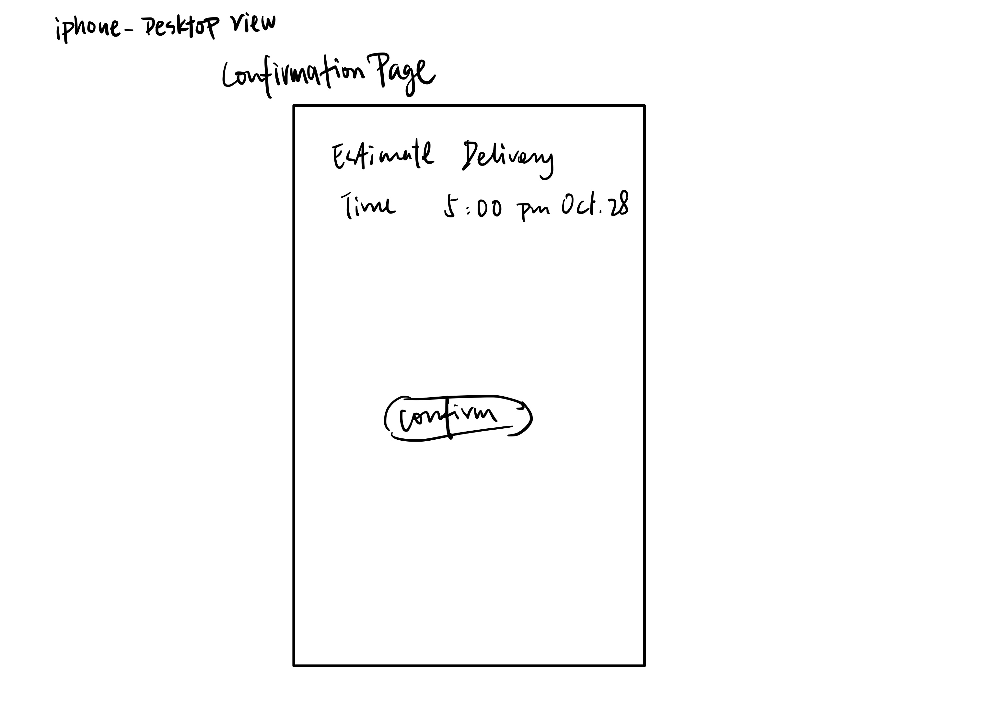
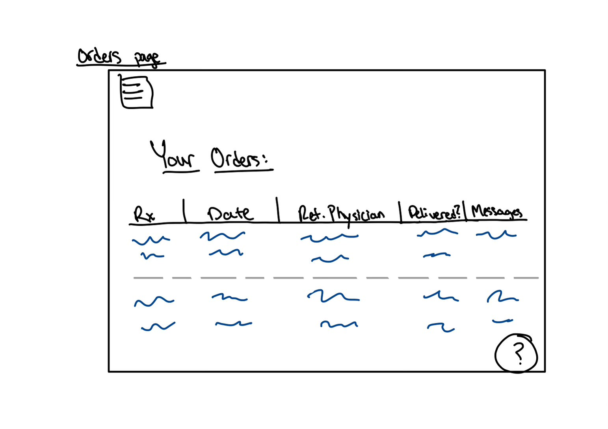
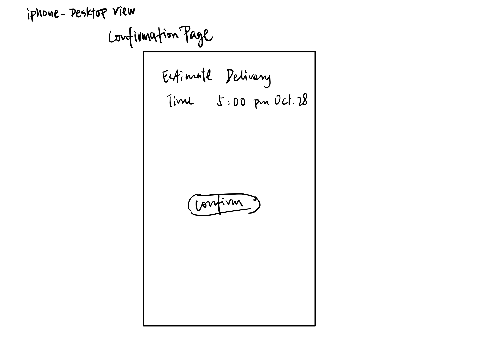
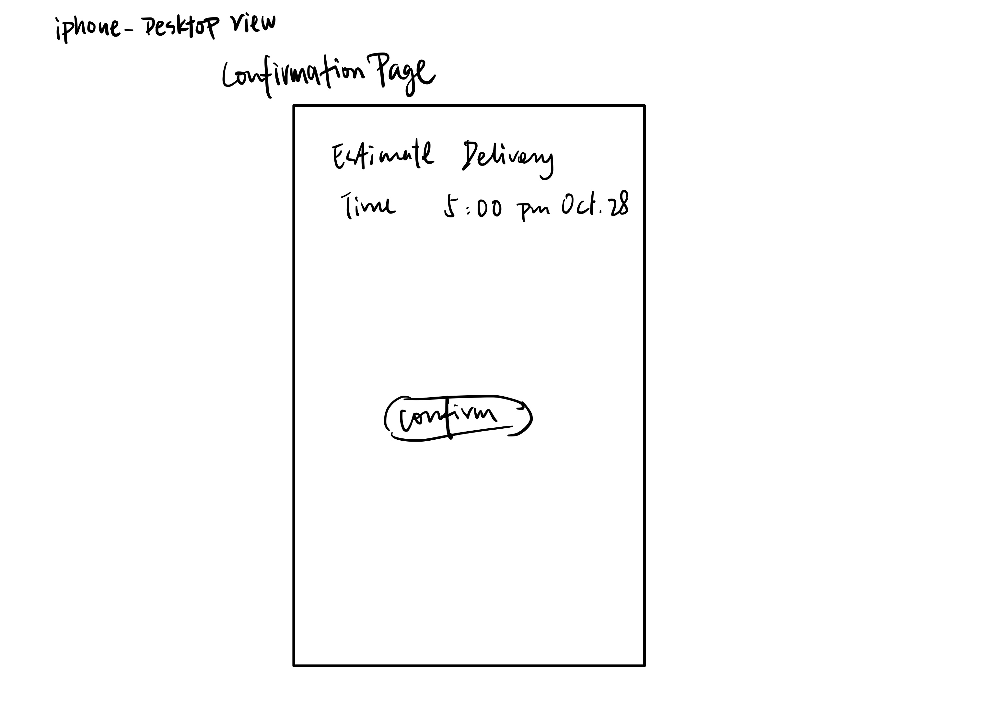

The following article walks you through the process of designing an interactive
interface for an emerging startup when working in a team. It will cover the full process
of mocking up a solution to the startup's concept. This process was roughly split into four parts
to exemplify an iterative design process flow. The first was sketching ideas of the interface,
followed by creating an interactive, high-fidelity prototype, then conducting user testing on a final,
revised prototype, and lastly contacting the startup to show them the design we came up with.
Selecting a Startup
We wanted to pick a startup that was doing something meaningful and since one of
our team members intends on becoming a doctor, we ended up choosing NimbleRx.
They describe themselves as follows:
Sketching and Wireframing
Pre-Design Thinking
Our team chose to implement the customer portal for an on-demand prescription delivery startup, NimbleRx.
NimbleRx is designed to be a platform that connects pharmacies, physician offices, hospitals, and patients.
It strives to make prescription delivery fast, easy, and secure. We believe patients who would like prescriptions
to be delivered to their doorsteps will find our portal helpful. With our interface, they can easily order their
prescriptions online and have them delivered on the same day of ordering. There is no need to leave home to visit
a pharmacy when you already feel unwell.
Sketching
We decided to independently brainstorm 4 different possible designs. The idea behind doing this was not to have polished
designs but rather to reflect as wide a variety of screens and layouts as possible to get ideas flowing. We tried to make
sure that each set of sketches showed the key functionalities of NimbleRx, including at least 3 different screens. We made
sure to not look at NimbleRx's existing interface during sketching or mockups, attempting to create an original design
not based on anything the company has done so far; and again, we are aiming to address the problem the startup is working on.
The slideshow frames below for each design have "buttons" at the bottom that you can click to access different sketches.
Design 1

Design 2
Design 3

Design 4
Wireframing
Once we finished sketching we had a discussion to make sure that the sketches demonstrated solutions to
NimbleRx's goals as described in their blurb (i.e, making sure the sketches are effective at solving the problem) and
that they reflected creative ideas and alternate solutions to NimbleRx's goals that were substantially
different from one another. After this discussion, we made a single set of wireframes that combined the best
aspects of all of our designs and incorporated the feedback that came out of our discussion.
Mockups
Original Mockup
We then made an interactive high-fidelity prototype based on the wireframe we created. The idea here was to
make this look like the real finished product. It is essentially an enhanced version of the wireframe populated
with realistic content and can be navigated via buttons, links, and other elements between the different screens.
This is not meant to replace an actual finished product as it only has enough screens to
demonstrate key interactions with the interface. What you see below is an embedded Figma frame that you can
interact with.
The image below briefly goes over the use of design principles when designing this interface, it is not an exhaustive
list but rather simply meant to give you a sense of what we did if it was not clear already.
Mockup Crit
We had a great crit session with our peers and garnered a lot of very useful information and valid feedback on
how our interface could be improved. For the most part, feedback fell into one of the following categories:
Navigation. There is no way to go back to prior steps when placing an order nor is there a way to tell
how far you are within the ordering process. Clicking on elements that indicate they will lead to the
home page, actually end up logging you out and placing you on the landing page.
Ordering Process. There is no way to save an address or payment information, it needs to be entered from
scratch every time. When choosing a time for delivery it only lets you pick a time, not a date. The difference
between orders and prescriptions is also unclear. There is no cart to order multiple prescriptions simultaneously.
Prescription Table. The hyperlink on each medication is blue indicating it links to more information on the medicine
itself. That single hyperlink is not sufficiently well differentiated when it is the primary mode of interaction on
that page. It is not clear what clicking on the link does when something is already ordered. Information regarding
whether the prescription has refills or an end date etc. are missing.
Home Page and Profile. These pages have a lot of white space and don’t seem to be using space wisely. It could show
more critical information at a glance such as payment methods, saved addresses etc. rather than just what appears to
be a random date.
Revised Mockup
After crit, we spent a substantial amount of time redesigning the interface to address everything that
was brought up. Hopefully the difference in usability between the 2 interfaces is clear and the improvements
made by addressing feedback from crit are appreciated. Once again, what you see below is an embedded Figma frame
that you can interact with.
User Testing
Having users try out an interface is an important part of testing and a valuable source of feedback.
We conducted usability tests through a remote user testing service (usertesting.com), using our newly created,
interactive hi-fi prototype that you just saw above. You can find more information on how the service works on
their website but below we have a summary of the primary information we provided to participants and what they
had to say about our interface.
The Scenario
The following scenario was presented to user testers before they interacted with the interface:
"Imagine you just got back from the doctor and were prescribed a bunch of medications. You are already not feeling well
and do not want to have to pick up the phone to call a pharmacy and make sure they have your medications, and then drive
there to pick up the medications yourself. You had previously heard of this new home-delivery pharmacy service called NimbleRx
so you set up an account with them and are now logging in to order the medication you need delivered to your house today.""
The Testing Instructions
We provided the following information to give user testers context on what they would be interacting with since they
normally tend to test fully functioning websites:
"You will be interacting with an interactive mockup not an actual functioning website so only the parts of the mockup needed to
complete the assigned task will function as expected, the majority of the rest of the elements are placeholders/dummy elements.""
The Task and Expected Steps
The following task was presented to user testers as the task they would need to complete:
"You need to place an order for a same-day delivery of your most recent prescription of Levothyroxine 0.2mg."
The following steps are how we expected the user testers to interact with the interface:
The user presses "Patients" on the landing page.
The user logs in by pressing "Submit" on the login page.
The user either presses "See my prescriptions" at the bottom of the home page or "Prescriptions" in the nav bar.
The user presses "Order Now" in the row corresponding to Levothyroxine 0.2mg.
The user scrolls through the "Delivery Address" page, attempts to select an existing address or type in a new one, and presses "Confirm".
The user scrolls through the "Delivery Date" page, attempts to select a date and time, and presses "Confirm".
The user scrolls through the "Payment" page, attempts to select an existing payment method or type in a new one, and presses "Confirm".
The user either returns to the home page or attempts to order more.
Post-Task Questions
We posed the following questions to users once they used the interface:
How easy/hard was this pharmacy interface to order your prescribed medicine and to get it delivered on the same day when compared to the one you traditionally use? Why?
How well designed was this interface? How aesthetically pleasing was this interface? How did these 2 factors affect your experience of using it?
At any moment did you find yourself confused about what to do next? What do you think contributed to you being confused?
If you had a magic wand and could do anything to make the medication ordering process easier or better in any way whatsoever, what would you do?
User Feedback
Summary and Analysis of User Feedback
The task provided to users was to place an order for a same-day delivery of their most recent prescription of Levothyroxine 0.2mg.
This task was completed by all 3 users. The average time to complete the task was 4 minutes and 30 seconds with the fastest time being
3 minutes. All 3 users rated this task and interface as being very easy to complete. They were easily able to find button(s) that
link to the next page to complete the task. All users interacted with the interface as expected and followed the steps we listed.
A few deviations from expected behavior that are worth mentioning include the fact that 2 users were able to go to the prescription page
from both the button in the nav bar and the button at the bottom of the home/profile page while 1 user only used one of these navigation
methods. One of the users was specifically confused by the many dummy buttons and dummy text boxes on the interface. They also found
the prescription page not being updated after placing an order to be a little confusing.
Generally, most feedback was very positive and in line with our team’s expectations. All negative feedback is just a consequence of Figma's
limitations and that of using a prototype instead of an actual functioning website. Since we didn't receive any constructive feedback
regarding the website, there are not any changes we would make as a result of the user testing process though there is always room
for improvement and we do have some thoughts of our own.
Conclusion
To summarize this process, I would say that it has been really fun to work with a team on designing an interface for
a product concept by working through the stages of the iterative design process. I think it gave all of us great insight
into what it would be like to work as a designer and I hope it gave you a sense of that too!
 
